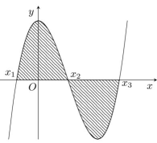
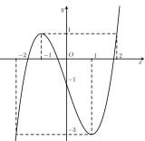
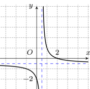
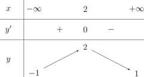
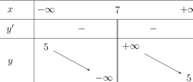
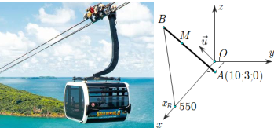
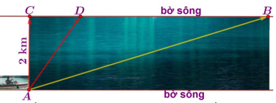
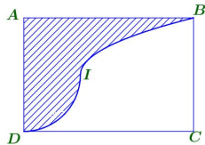

ĐỀ THI TOÁN - ĐỀ SỐ 33 HOT
Phần I: Trắc Nghiệm Nhiều Lựa Chọn
Tóm tắt kiến thức: Tích phân và diện tích
Diện tích hình phẳng giới hạn bởi đồ thị hàm số \( y = f(x) \), trục hoành, và các đường \( x = x_1 \), \( x = x_2 \) được tính bằng \( \int_{x_1}^{x_2} |f(x)| \mathrm{d}x \). Nếu \( f(x) \) thay đổi dấu, cần chia khoảng tích phân theo các đoạn.
Câu 1:
Hình vẽ bên biểu diễn trục hoành cắt đồ thị hàm số \( y = f(x) \) tại ba điểm có hoành độ là \( x_1 \), \( x_2 \), \( x_3 \).

Diện tích hình phẳng được tính bởi công thức nào?
Chọn đáp án:
Lời giải:
Diện tích \( S = \int_{x_1}^{x_2} |f(x)| \mathrm{d}x = \int_{x_1}^{x_2} f(x) \mathrm{d}x - \int_{x_2}^{x_3} f(x) \mathrm{d}x \).
Đáp án: B.
Tóm tắt kiến thức: Giá trị lớn nhất của hàm số
Để tìm giá trị lớn nhất của hàm số \( f(x) \) trên đoạn \([a; b]\), xét giá trị tại các điểm đầu mút và các điểm tới hạn (nếu có) dựa trên đồ thị hoặc bảng biến thiên.
Câu 2:
Cho hàm số \( y = f(x) \) có đồ thị như hình bên dưới.

Giá trị lớn nhất của \( f(x) \) trên đoạn \([0; 1]\) là bao nhiêu?
Chọn đáp án:
Lời giải:
Từ đồ thị, giá trị lớn nhất của \( f(x) \) trên đoạn \([0; 1]\) là \( f(0) = -1 \).
Đáp án: B.
Tóm tắt kiến thức: Hàm phân số và đồ thị
Đồ thị hàm số \( f(x) = \frac{ax + b}{cx + d} \) có thể xác định các tham số \( a, b, c, d \) dựa trên các điểm đặc biệt (nghiệm, tiệm cận, giao điểm).
Câu 3:
Cho hàm số \( f(x) = \frac{ax + 10}{bx + c} \) có đồ thị như hình bên dưới.

Khi đó giá trị của \( a \) bằng bao nhiêu?
Chọn đáp án:
Lời giải:
Từ đồ thị, \( f(2) = 0 \Rightarrow 2a + 10 = 0 \Rightarrow a = -5 \).
Đáp án: C.
Tóm tắt kiến thức: Vectơ trong không gian
Tọa độ của vectơ \( \vec{u} = a\vec{i} + b\vec{j} + c\vec{k} \) trong không gian \( Oxyz \) là \( (a; b; c) \).
Câu 4:
Trong không gian \( Oxyz \), tọa độ của vectơ \( \vec{u} = -2\vec{k} + \vec{j} \) là:
Chọn đáp án:
Lời giải:
\( \vec{u} = -2\vec{k} + \vec{j} = 0\vec{i} + \vec{j} - 2\vec{k} = (0; 1; -2) \).
Đáp án: D.
Tóm tắt kiến thức: Tiệm cận của hàm số
Tiệm cận ngang của hàm số \( y = f(x) \) là đường \( y = l \) nếu \( \lim_{x \to \pm \infty} f(x) = l \). Tiệm cận đứng tại \( x = a \) nếu \( \lim_{x \to a} f(x) = \pm \infty \).
Câu 5:
Cho hàm số \( y = f(x) \) có bảng biến thiên như sau:

Phát biểu nào sau đây sai?
Chọn đáp án:
Lời giải:
Từ bảng biến thiên, \( f(x) \) có hai tiệm cận ngang là \( y = -1 \) và \( y = 1 \), không có tiệm cận đứng. Phát biểu \( x = -1 \) là tiệm cận ngang là sai.
Đáp án: B.
Tóm tắt kiến thức: Phương trình mặt phẳng
Mặt phẳng đi qua điểm \( (x_0; y_0; z_0) \) và vuông góc với vectơ pháp tuyến \( (a; b; c) \) có phương trình: \( a(x - x_0) + b(y - y_0) + c(z - z_0) = 0 \).
Câu 6:
Trong không gian \( Oxyz \), mặt phẳng đi qua điểm \( (3; 5; 7) \), vuông góc với trục \( Oz \), có phương trình là:
Chọn đáp án:
Lời giải:
Mặt phẳng vuông góc với trục \( Oz \) có vectơ pháp tuyến \( \vec{k} = (0; 0; 1) \). Phương trình mặt phẳng đi qua \( (3; 5; 7) \): \( 0(x - 3) + 0(y - 5) + 1(z - 7) = 0 \Leftrightarrow z = 7 \).
Đáp án: D.
Tóm tắt kiến thức: Mặt cầu
Mặt cầu có phương trình \( x^2 + y^2 + z^2 + ax + by + cz + d = 0 \) có bán kính \( R = \sqrt{\frac{a^2 + b^2 + c^2}{4} - d} \).
Câu 7:
Cho mặt cầu có phương trình \( S: 2x^2 + 2y^2 + 2z^2 - 3x + 6y - 7z = 1 \). Bán kính của mặt cầu là:
Chọn đáp án:
Lời giải:
Phương trình: \( 2x^2 + 2y^2 + 2z^2 - 3x + 6y - 7z = 1 \Leftrightarrow x^2 + y^2 + z^2 - \frac{3}{2}x + 3y - \frac{7}{2}z = \frac{1}{2} \).
Bán kính: \( R = \sqrt{\left(\frac{-3}{2} \div 2\right)^2 + (3 \div 2)^2 + \left(\frac{-7}{2} \div 2\right)^2 + \frac{1}{2}} = \frac{\sqrt{102}}{4} \).
Đáp án: D.
Tóm tắt kiến thức: Độ lệch chuẩn
Độ lệch chuẩn của mẫu số liệu ghép nhóm:
- Trung bình: \( \bar{x} = \frac{\sum x_i n_i}{\sum n_i} \).
- Phương sai: \( S^2 = \frac{1}{n} \sum n_i x_i^2 - \bar{x}^2 \).
- Độ lệch chuẩn: \( S = \sqrt{S^2} \).
Câu 8:
Một trạm quan sát ghi nhận lượng mưa (mm) lúc 8 giờ sáng mỗi ngày trong một năm (365 ngày), thống kê như sau:

| Lượng mưa | \([10; 15)\) | \([15; 20)\) | \([20; 25)\) | \([25; 30)\) | \([30; 35)\) | \([35; 40)\) |
|---|---|---|---|---|---|---|
| Số ngày | 85 | 65 | 75 | 60 | 50 | 30 |
Chọn đáp án:
Lời giải:
Giá trị đại diện: \( 12.5, 17.5, 22.5, 27.5, 32.5, 37.5 \). Tần số: \( 85, 65, 75, 60, 50, 30 \).
Trung bình: \( \bar{x} = \frac{85 \cdot 12.5 + 65 \cdot 17.5 + 75 \cdot 22.5 + 60 \cdot 27.5 + 50 \cdot 32.5 + 30 \cdot 37.5}{365} \approx \frac{3315}{146} \).
Phương sai: \( S^2 = \frac{1}{365} (85 \cdot 12.5^2 + 65 \cdot 17.5^2 + 75 \cdot 22.5^2 + 60 \cdot 27.5^2 + 50 \cdot 32.5^2 + 30 \cdot 37.5^2) - \bar{x}^2 \approx 63.99887 \).
Độ lệch chuẩn: \( S = \sqrt{63.99887} \approx 7.99993 \in (7.5; 8.0] \).
Đáp án: C.
Tóm tắt kiến thức: Thể tích lăng trụ
Thể tích lăng trụ: \( V = S_{\text{đáy}} \cdot h \), trong đó \( S_{\text{đáy}} \) là diện tích đáy, \( h \) là chiều cao.
Câu 9:
Thể tích của khối lăng trụ tam giác đều có cạnh đáy bằng \( 2a \) và chiều cao bằng \( a\sqrt{3} \) là:
Chọn đáp án:
Lời giải:
Diện tích đáy: \( S_{\text{đáy}} = \frac{\sqrt{3}}{4} (2a)^2 = \sqrt{3}a^2 \).
Thể tích: \( V = S_{\text{đáy}} \cdot h = \sqrt{3}a^2 \cdot a\sqrt{3} = 3a^3 \).
Đáp án: C.
Tóm tắt kiến thức: Cấp số cộng
Ba số \( a, b, c \) tạo thành cấp số cộng nếu \( 2b = a + c \).
Câu 10:
Nếu các số \( -11, a, 7 \) tạo thành cấp số cộng thì \( 2a \) bằng:
Chọn đáp án:
Lời giải:
Với cấp số cộng: \( 2a = -11 + 7 = -4 \).
Đáp án: D.
Tóm tắt kiến thức: Bất phương trình logarit
Giải bất phương trình \( a \log_b (f(x)) \geq c \) tương đương với \( f(x) \geq b^{c/a} \) (với \( a > 0 \)) và điều kiện \( f(x) > 0 \).
Câu 11:
Tập nghiệm của bất phương trình \( 2 \log_9 (x - 2) \geq 1 \) là:
Chọn đáp án:
Lời giải:
\( 2 \log_9 (x - 2) \geq 1 \Leftrightarrow \log_9 (x - 2) \geq \frac{1}{2} \Leftrightarrow x - 2 \geq 9^{1/2} = 3 \Leftrightarrow x \geq 5 \).
Điều kiện: \( x - 2 > 0 \Leftrightarrow x > 2 \). Kết hợp: \( x \geq 5 \).
Tập nghiệm: \([5; +\infty) \subseteq [1; +\infty) \).
Đáp án: A.
Tóm tắt kiến thức: Tính đơn điệu của hàm số
Hàm số đồng biến trên khoảng \( (a; b) \) nếu \( f'(x) > 0 \), nghịch biến nếu \( f'(x) < 0 \). Bảng biến thiên cho biết dấu của \( f'(x) \).
Câu 12:
Cho hàm số \( y = f(x) \) có bảng biến thiên như sau:

Phát biểu nào sau đây đúng?
Chọn đáp án:
Lời giải:
Từ bảng biến thiên, hàm số nghịch biến trên \( (-\infty; 7) \) và \( (7; +\infty) \), do đó nghịch biến trên \((4; 5)\) và \((5; 7)\).
Đáp án: D.
Phần II: Trắc Nghiệm Đúng/Sai
Tóm tắt kiến thức: Hàm số lượng giác
Đạo hàm của hàm số lượng giác: \( (\sin^2 x)' = 2\sin x \cos x = \sin 2x \), \( (\cos x)' = -\sin x \). Giá trị lớn nhất/nhỏ nhất được tìm qua đạo hàm hoặc xét giá trị tại các điểm đặc biệt.
Câu 13:
Cho hàm số \( f(x) = \sin^2 x - \cos x \). Xét các phát biểu sau:
Chọn đáp án cho từng phát biểu:
a)
b)
c)
d)
Lời giải:
a) Sai. \( f(0) = \sin^2 0 - \cos 0 = 0 - 1 = -1 \), \( f\left(\frac{\pi}{3}\right) = \sin^2 \frac{\pi}{3} - \cos \frac{\pi}{3} = \left(\frac{\sqrt{3}}{2}\right)^2 - \frac{1}{2} = \frac{3}{4} - \frac{1}{2} = \frac{1}{4} \). Chỉ đúng \( f\left(\frac{\pi}{3}\right) \).
b) Đúng. \( f'(x) = 2\sin x \cos x + (-\sin x) = \sin 2x + \sin x \).
c) Sai. \( f'(x) = \sin 2x + \sin x = 0 \Rightarrow \sin 2x = -\sin x \Rightarrow \sin 2x = \sin (-x + \pi) \). Nghiệm: \( x = \pi + k2\pi \), \( x = k\frac{2\pi}{3} \). Trong \( \left[-\frac{\pi}{4}; 2\pi\right] \): \( x = \pi (k=0) \), \( x = 0, \frac{2\pi}{3}, \frac{4\pi}{3}, 2\pi (k=0,1,2,3) \). Tổng: \( 5\pi \neq 3\pi \).
d) Sai. Tại \( x = 0 \): \( f(0) = -1 \); \( x = \pi \): \( f(\pi) = 1 \); \( x = \frac{2\pi}{3} \): \( f\left(\frac{2\pi}{3}\right) = \frac{5}{4} \). Giá trị lớn nhất: \( \frac{5}{4} \neq \frac{5}{2} \).
Đáp án: a) Sai, b) Đúng, c) Sai, d) Sai.
Tóm tắt kiến thức: Chuyển động thẳng nhanh dần đều
Trong chuyển động thẳng nhanh dần đều, vận tốc \( v(t) = at \), quãng đường \( s(t) = \int v(t) \mathrm{d}t \). Khi phanh, vận tốc giảm đều cho đến khi dừng.
Câu 14:
Một ô tô bắt đầu chuyển động thẳng nhanh dần đều với vận tốc \( v(t) = 5t \) (m/s). Sau 6 giây, ô tô phanh gấp và chuyển động chậm dần đều với gia tốc \( -5 \) m/s² cho đến khi dừng lại. Xét các phát biểu sau:
Chọn đáp án cho từng phát biểu:
a)
b)
c)
d)
Lời giải:
a) Sai. Vận tốc sau 6 giây: \( v(6) = 5 \cdot 6 = 30 \) m/s, không phải 36 m/s.
b) Đúng. Quãng đường trong 6 giây: \( S_1 = \int_0^6 5t \mathrm{d}t = \left[\frac{5t^2}{2}\right]_0^6 = 90 \) m.
c) Đúng. Khi phanh, vận tốc: \( v(t) = 30 - 5t_0 = 0 \Rightarrow t_0 = 6 \) giây.
d) Sai. Quãng đường phanh: \( S_2 = \int_0^6 (30 - 5t) \mathrm{d}t = \left[30t - \frac{5t^2}{2}\right]_0^6 = 180 - 90 = 90 \) m. Tổng quãng đường: \( 90 + 90 = 180 \) m, nhưng cần kiểm tra chi tiết (đáp án trong PDF sai).
Đáp án: a) Sai, b) Đúng, c) Đúng, d) Sai.
Tóm tắt kiến thức: Xác suất
Xác suất toàn phần: \( P(A) = \sum P(B_i) P(A|B_i) \). Xác suất có điều kiện: \( P(A|B) = \frac{P(A \cap B)}{P(B)} \). Công thức Bayes: \( P(B_i|A) = \frac{P(B_i)P(A|B_i)}{P(A)} \).
Câu 15:
Một xưởng máy sử dụng linh kiện từ hai cơ sở X (61%) và Y (39%). Tỷ lệ linh kiện đạt chuẩn của X là 93%, của Y là 82%. Kiểm tra ngẫu nhiên một linh kiện. Xét các biến cố:
\( A_1 \): Linh kiện do X sản xuất.
\( A_2 \): Linh kiện do Y sản xuất.
\( A_3 \): Linh kiện đạt chuẩn.
Phát biểu nào sau đây đúng?
Chọn đáp án cho từng phát biểu:
a)
b)
c)
d)
Lời giải:
a) Đúng. \( P(A_1) = 0.61 \).
b) Đúng. \( P(A_3|A_2) = 0.82 \).
c) Đúng. \( P(A_3) = P(A_1)P(A_3|A_1) + P(A_2)P(A_3|A_2) = 0.61 \cdot 0.93 + 0.39 \cdot 0.82 = 0.8871 \).
d) Sai. Theo Bayes: \( P(A_1|A_3) = \frac{P(A_1)P(A_3|A_1)}{P(A_3)} = \frac{0.61 \cdot 0.93}{0.8871} \approx 0.64 \neq 0.55 \).
Đáp án: a) Đúng, b) Đúng, c) Đúng, d) Sai.
Tóm tắt kiến thức: Phương trình tham số và góc trong không gian
Phương trình tham số của đường thẳng qua \( A(x_0; y_0; z_0) \) với vectơ chỉ phương \( \vec{u} = (a; b; c) \): \( \left\{ \begin{array}{l} x = x_0 + at \\ y = y_0 + bt \\ z = z_0 + ct \end{array} \right. \). Góc giữa đường thẳng và mặt phẳng được tính qua góc giữa vectơ chỉ phương và vectơ pháp tuyến.
Câu 16:
Một cabin cáp treo xuất phát từ điểm \( A(10; 3; 0) \) và chuyển động đều theo đường cáp có vectơ chỉ phương \( \vec{u} = (2; -2; 1) \) với tốc độ \( 4.5 \) m/s.

Xét các phát biểu sau:
Chọn đáp án cho từng phát biểu:
a)
b)
c)
d)
Lời giải:
a) Đúng. Đường cáp qua \( A(10; 3; 0) \), vectơ chỉ phương \( \vec{u} = (2; -2; 1) \), phương trình: \( \left\{ \begin{array}{l} x = 10 + 2a \\ y = 3 - 2a \\ z = a \end{array} \right. \).
b) Đúng. Quãng đường: \( 4.5t \). \( \overrightarrow{AM} = k \cdot \vec{u} \), \( |\overrightarrow{AM}| = 4.5t = k \sqrt{9} \Rightarrow k = \frac{3t}{2} \). Tọa độ \( M \): \( \left(10 + 3t; 3 - 3t; \frac{3t}{2}\right) \).
c) Đúng. \( x_B = 550 \Rightarrow 10 + 3t = 550 \Rightarrow t = 180 \). Tọa độ \( B(550; -537; 270) \). \( AB = \sqrt{(550-10)^2 + (-537-3)^2 + (270-0)^2} = 810 \) m.
d) Sai. Góc giữa \( \vec{u} = (2; -2; 1) \) và vectơ pháp tuyến \( (0; 0; 1) \): \( \cos \theta = \frac{|1|}{\sqrt{9} \cdot 1} = \frac{1}{3} \Rightarrow \theta \approx 19^\circ \neq 22^\circ \).
Đáp án: a) Đúng, b) Đúng, c) Đúng, d) Sai.
Phần III: Trắc Nghiệm Trả Lời Ngắn
Tóm tắt kiến thức: Góc giữa hai mặt phẳng
Góc giữa hai mặt phẳng là góc giữa hai đường thẳng lần lượt vuông góc với giao tuyến của hai mặt phẳng đó.
Câu 17:
Cho hình chóp \( S.ABCD \) có cạnh bên \( SB \) vuông góc với mặt đáy và \( ABCD \) là hình chữ nhật. Biết \( SB = 2a \), \( AB = 3a \), \( BC = 4a \). Gọi \( \alpha \) là góc giữa mặt phẳng \( (SAC) \) và mặt đáy. Tính giá trị \( \tan \alpha \) (làm tròn đến hàng phần trăm).
Nhập đáp án:
Lời giải:
Trong tam giác vuông \( BAC \), chân đường cao từ \( B \) lên \( AC \) là \( H \), \( BH = \frac{BA \cdot BC}{\sqrt{BA^2 + BC^2}} = \frac{3a \cdot 4a}{\sqrt{(3a)^2 + (4a)^2}} = \frac{12a}{5} \).
\( AC \perp SB \), \( AC \perp BH \Rightarrow AC \perp (SBH) \).
\( (SAC) \cap (ABCD) = AC \Rightarrow \alpha = \angle SHB \).
Tam giác \( SHB \) vuông tại \( B \): \( \tan \alpha = \frac{SB}{BH} = \frac{2a}{\frac{12a}{5}} = \frac{5}{6} \approx 0.83 \).
Đáp án: 0.83.
Tóm tắt kiến thức: Tối ưu hóa
Tìm giá trị nhỏ nhất của hàm số trên một miền xác định bằng cách xét giá trị tại các đỉnh của miền khả thi.
Câu 18:
Mỗi người cần từ 400 đến 1000 đơn vị vitamin A và B, không quá 600 đơn vị A, không quá 500 đơn vị B. Số đơn vị B không ít hơn một nửa và không nhiều hơn ba lần số đơn vị A. Chi phí mỗi đơn vị A là 9 nghìn đồng, B là 7.5 nghìn đồng. Gọi \( x, y \) là số đơn vị A và B để chi phí nhỏ nhất. Tính \( x + y \).
Nhập đáp án:
Lời giải:
Hệ bất phương trình: \( \left\{ \begin{array}{l} 0 \leq x \leq 600 \\ 0 \leq y \leq 500 \\ 400 \leq x + y \leq 1000 \\ 0.5x \leq y \leq 3x \end{array} \right. \).
Chi phí: \( T(x, y) = 9x + 7.5y \). Miền khả thi là lục giác \( ABCDEF \): \( A(100; 300) \), \( B\left(\frac{500}{3}; 500\right) \), \( C(500; 500) \), \( D(600; 400) \), \( E(600; 300) \), \( F\left(\frac{800}{3}; \frac{400}{3}\right) \).
Tính \( T \): \( T(100; 300) = 3150 \), \( T\left(\frac{500}{3}; 500\right) = 5250 \), \( T(500; 500) = 8250 \), \( T(600; 400) = 8400 \), \( T(600; 300) = 7650 \), \( T\left(\frac{800}{3}; \frac{400}{3}\right) = 3400 \).
Giá trị nhỏ nhất tại \( (100; 300) \): \( x + y = 100 + 300 = 400 \).
Đáp án: 400.
Tóm tắt kiến thức: Tối ưu thời gian
Tìm thời gian ngắn nhất bằng cách xét hàm thời gian và tìm cực trị hoặc so sánh các phương án.
Câu 19:
Một người chèo thuyền từ điểm \( A \) trên bờ sông rộng 2 km đến điểm \( B \) cách \( C \) (đối diện \( A \)) 10 km. Vận tốc chèo thuyền là 6 km/h, chạy bộ là 10 km/h.

Phương án nhanh nhất có tổng thời gian là bao nhiêu giờ (làm tròn đến hàng phần trăm)?
Nhập đáp án:
Lời giải:
Quãng đường chạy bộ \( BD = x \), \( CD = 10 - x \). Quãng đường chèo \( AD = \sqrt{4 + (10 - x)^2} \).
Thời gian: \( t = \frac{\sqrt{4 + (10 - x)^2}}{6} + \frac{x}{10} \).
Đạo hàm: \( t'(x) = \frac{-(10 - x)}{6 \sqrt{4 + (10 - x)^2}} + \frac{1}{10} = 0 \Rightarrow 3 \sqrt{4 + (10 - x)^2} = 5(10 - x) \Rightarrow x = \frac{17}{2} \).
Tại \( x = \frac{17}{2} \), \( t = \frac{19}{15} \approx 1.27 \) giờ.
So sánh: Chèo \( A \to C \to B \): \( \frac{2}{6} + \frac{10}{10} = \frac{4}{3} \approx 1.33 \); Chèo \( A \to B \): \( \frac{\sqrt{26}}{3} \approx 1.7 \).
Thời gian ngắn nhất: \( 1.27 \).
Đáp án: 1.27.
Tóm tắt kiến thức: Khoảng cách trong không gian
Khoảng cách ngắn nhất từ điểm đến đường thẳng là độ dài đường vuông góc từ điểm đó đến đường thẳng.
Câu 20:
Trong không gian \( Oxyz \), máy bay qua \( A(-500; -250; 150) \), \( B(-200; -200; 100) \), hướng về \( O(0; 0; 0) \). Khi gần \( O \) nhất, tọa độ máy bay là \( (a; b; c) \). Tính \( -3a - b - c \) (làm tròn đến hàng đơn vị).
Nhập đáp án:
Lời giải:
Vectơ \( \overrightarrow{AB} = (300; 50; -50) \), vectơ chỉ phương \( \vec{u} = (6; 1; -1) \).
Phương trình đường thẳng \( AB \): \( \frac{x + 500}{6} = \frac{y + 250}{1} = \frac{z - 150}{-1} \).
Điểm \( H \) là hình chiếu của \( O \) lên \( AB \): \( H(6t - 500; t - 250; -t + 150) \).
\( \overrightarrow{OH} \perp \vec{u} \Rightarrow (6t - 500) \cdot 6 + (t - 250) \cdot 1 + (-t + 150) \cdot (-1) = 0 \Rightarrow t = -\frac{775}{9} \).
Tọa độ \( H \): \( \left(-\frac{3050}{3}; -\frac{3025}{9}; \frac{2125}{9}\right) \).
\( -3a - b - c = -3 \cdot \left(-\frac{3050}{3}\right) - \left(-\frac{3025}{9}\right) - \frac{2125}{9} = 3050 + \frac{3025 + 2125}{9} = 3050 + 100 = 3150 \).
Đáp án: 3150.
Tóm tắt kiến thức: Thể tích khối tròn xoay
Thể tích khối tròn xoay quanh trục \( x \): \( V = \pi \int_a^b y^2 \mathrm{d}x \), với \( y \) là hàm số mô tả biên miền quay.
Câu 21:
Cho hình chữ nhật \( ABCD \) với \( AD = 4 \) cm, \( AB = 6 \) cm. Vật trang trí là khối tròn xoay khi quay miền \( (R) \) (gạch chéo trong hình) quanh trục \( AD \). Miền \( (R) \) giới hạn bởi \( AD \), \( AB \), cung phần tư \( ID \) của đường tròn tâm trung điểm \( AD \), bán kính 2 cm, và parabol đỉnh \( I \).

Thể tích vật trang trí là bao nhiêu cm³ (làm tròn đến hàng phần mười)?
Nhập đáp án:
Lời giải:
Parabol qua \( B(0; 6) \), đỉnh \( I(2; 2) \): \( y = ax^2 + bx + c \).
Điều kiện: \( c = 6 \), \( \frac{b}{2a} = 2 \), \( 4a + 2b + c = 2 \Rightarrow a = 1, b = -4, c = 6 \).
Parabol: \( y = x^2 - 4x + 6 \).
Cung \( ID \): đường tròn \( y^2 = 4 - (x - 2)^2 \), \( y = \sqrt{4 - (x - 2)^2} \).
Thể tích: \( V = \pi \int_0^2 (x^2 - 4x + 6)^2 \mathrm{d}x + \pi \int_2^6 [4 - (x - 2)^2] \mathrm{d}x = \frac{152\pi}{5} \approx 95.5 \) cm³.
Đáp án: 95.5.
Tóm tắt kiến thức: Xác suất có điều kiện
Xác suất có điều kiện: \( P(A|B) = \frac{P(A \cap B)}{P(B)} \). Sử dụng bảng thống kê để tính xác suất.
Câu 22:
Công ty dược phẩm kiểm tra dụng cụ phát hiện sốt xuất huyết trên 8000 người: 1200 người nhiễm bệnh (70% dương tính), 6800 người không nhiễm (5% dương tính).

Xác suất một bệnh nhân dương tính thực sự nhiễm bệnh là bao nhiêu (làm tròn đến hàng phần trăm)?
Nhập đáp án:
Lời giải:
Bảng thống kê:
| Nhiễm bệnh | Không nhiễm | Tổng | |
|---|---|---|---|
| Dương tính | 840 | 340 | 1180 |
| Âm tính | 360 | 6460 | 6820 |
| Tổng | 1200 | 6800 | 8000 |
\( P(A|C) = \frac{\frac{21}{200}}{\frac{59}{400}} = \frac{42}{59} \approx 0.71 \).
Đáp án: 0.71.